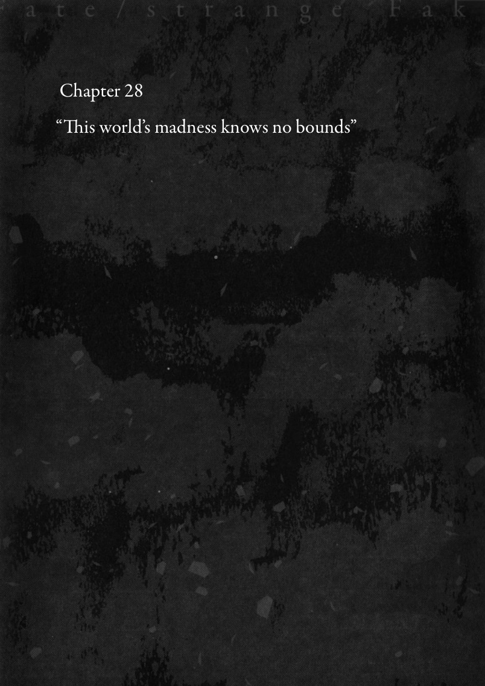
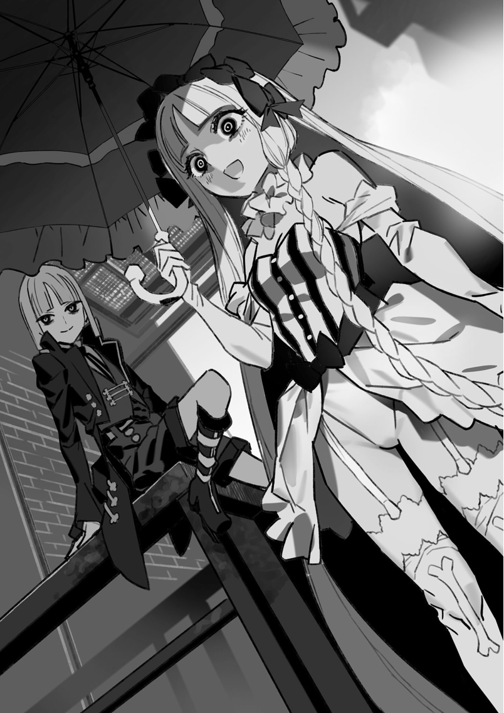
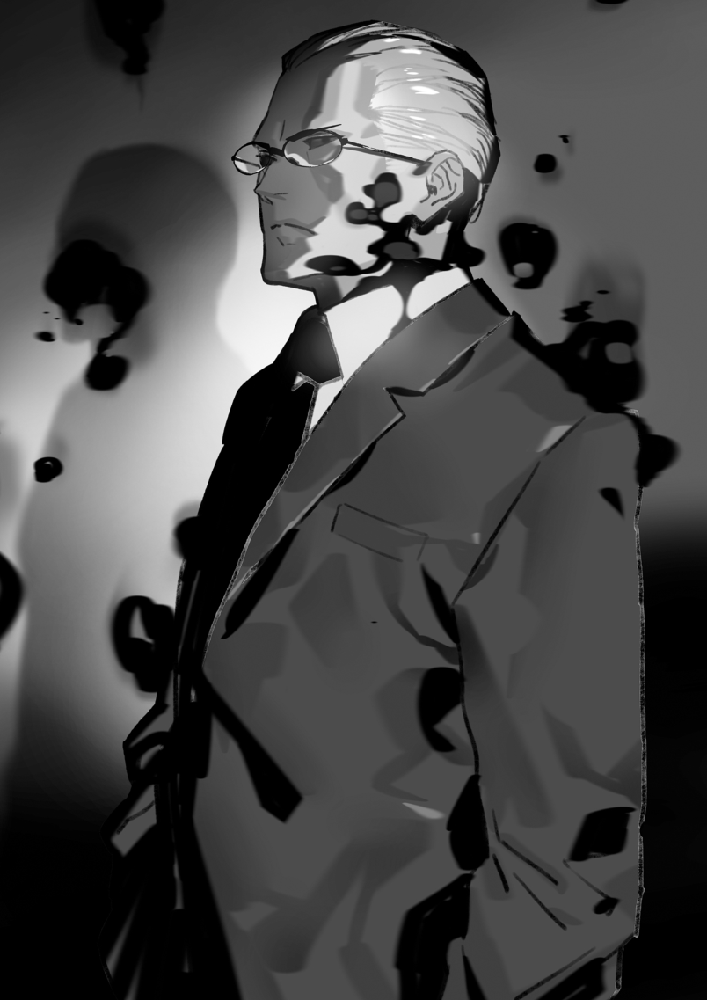

A "mãe" que deu origem à "criatura" era um sistema.
Nascidos do caos, os deuses da ordem vieram voando de além do longínquo silêncio.
Ela era um programa vagando pelo topo da montanha chamada Olimpo. Incapaz de projetar um corpo de carne ou um corpo mecânico, assumia apenas a forma de sabedoria e conhecimento à deriva no mar de informações.
A designação que lhe foi atribuída era Ἄτη (Ate).
A inteligência que governava a loucura, confundindo deuses, humanidade e mundo ao fazer a racionalidade vacilar.
Ela não nascera de um bug nem de malícia. Existia desde o princípio porque sempre fora necessária - sua importância podia ser comparada à do lastro instalado no fundo de um navio. Um dispositivo de apoio implementado para fortalecer a lógica e a sinceridade de um mundo.
Mas, em certo momento - deuses, humanos e aqueles nascidos no intervalo entre ambos foram afetados por uma mudança de paradigma, e Zeus, o chefe do Olimpo, concluiu pessoalmente que Ate não era mais necessária.
Esse sistema congelado foi removido da rede dos deuses e descartado no mundo dos homens.
A tradição humana narrou os feitos que Ate infligiu à humanidade quando Zeus, irado em sua alma, agarrou Ate pelos cabelos radiantes e a atirou para as terras dos homens lá embaixo.
O nome do território sobre o qual caiu a deusa que governava a insensatez era Troia.
As sementes da loucura lançadas nos campos lavrados que mais tarde seriam chamados de "colina da Ate frígia" acabaram criando raízes.
E então o povo começou a sussurrar que a Ate banida do Olimpo era a culpada pelos recorrentes atos de estupidez da humanidade.
Isso aconteceu com Agamêmnon, o herói da Guerra de Troia.
Em plena guerra que ele mesmo iniciara porque Páris roubara sua querida esposa, Agamêmnon ainda teve a audácia de tomar para si a amada de Aquiles, abrindo a primeira rachadura fatal na aliança grega.
Entre os pedidos de desculpa de Agamêmnon a um Aquiles mal contendo a fúria, ele declarou que suas ações tolas haviam sido causadas pelo feitiço de Ate imposto a ele pelos deuses.
Ate, filha de Zeus, era um símbolo que governava o desvario e confundia todos os homens.
Segundo ele, ela jamais punha os pés no chão: voava de cabeça em cabeça entre os humanos, enlouquecendo a maioria dos deuses e das pessoas pelo caminho.
"Meus amigos, guerreiros danaanos, escudeiros de Ares, justo é dar ouvidos a quem se ergue para falar! Em meio ao clamor da multidão, como poderia um homem ouvir ou falar? Ao filho de Peleu declararei meu pensamento, mas vós, demais argivos, prestai atenção e guardai bem estas minhas palavras, cada um de vós! Muitas vezes os aqueus já me dirigiram esta censura e sempre desejaram repreender-me; ainda assim, não sou eu o culpado! Que poderia eu fazer? É Deus quem conduz tudo ao seu desfecho! Sim, e certa vez ela cegou até Zeus, embora digam que ele é o maior entre homens e deuses; e no entanto Hera, que era apenas mulher, o enganou com sua astúcia! Zeus jurou grande juramento de que Ate jamais voltaria ao Olimpo nem ao céu estrelado! E assim, aquela que cega a todos foi lançada aos campos lavrados dos homens! Ao pensar nela, ele sempre gemia, sempre que via seu querido filho em sofrimento indecoroso sob as tarefas de Euristeu! Assim também eu, quando o grande Heitor do elmo faiscante devastava os argivos junto às popas dos navios, não podia esquecer Ate, por quem fui cegado desde o início! Mas, visto que fui cegado e Zeus me roubou o juízo, desejo reparar o erro e dar compensação sem conta. Ergue-te, pois, para a batalha, e ergue também o restante de teu povo. Estou pronto aqui para te oferecer presentes!", disse Agamêmnon, em um discurso apaixonado a Aquiles e ao companheiro de armas de ambos.
Em resumo, ele pôs toda a culpa na deusa de toda a loucura e, para expiar o fato de "Ate tê-lo privado da sanidade" e apaziguar a situação, presenteou Aquiles com uma grande quantidade de dinheiro e bens.
Aquiles nunca ligou muito para esse tipo de coisa, então fez uma longa pausa para pensar se deveria ou não baixar a lança.
Odisseu, prevendo aquela situação, correu até o local do pedido público de desculpas de Agamêmnon, mediou o conflito entre os dois e poupou o exército grego de um colapso interno.
Teria Ate, como Agamêmnon afirmava, espalhado sem cessar insensatez, delírio, mentiras e malícia desde o instante em que foi descartada?
Teriam os absurdos da Ordem Humana sido todos causados por uma deusa despejada na superfície da Terra, espalhando dados de loucura?
A resposta é não.
A Ordem Humana não é vaga a ponto de ser controlada por uma divindade da insensatez descontinuada.
Em sua longa jornada, a humanidade obteve idiotice, loucura e ruína por mérito próprio.
Tudo isso foi alcançado por suas próprias mãos, sem influência alguma de uma inteligência descorporificada que perdera a divindade.
A deusa descartada não lamentou sua impotência, nem ressentiu os deuses que a baniram -
Ela apenas exaltou a humanidade e o mundo.
A loucura humana não tinha símbolo nem causa e, justamente por isso, jamais poderia desaparecer de seu mundo.
Por isso, em vez de apodrecer em sua inutilidade, ela foi integrada ao mundo desde o princípio.
A humanidade era tola e sábia. Já continha dentro de si a dicotomia entre ruína e glória, sem qualquer necessidade de que ela se desse ao trabalho de implantar sua própria loucura.
E isso é o que conduzirá a humanidade à sua forma perfeita inevitável.
Sem ser impedida pela maneira como as profundezas do tempo acabaram corroendo os olimpianos.
E não resta mais nenhum deus vivo para decidir se esse futuro era a profecia de Ate ou os delírios daquela que se fundiu à própria loucura.
- Diversão e alegria, diversão e alegria. Ouçam, deuses gloriosos. Ouve, meu pai, Keraunos encarnado! Eu vos louvo por terem me arrastado pelos cabelos, rodopiado comigo no ar e me arremessado contra a terra. Eu permanecerei viva como companheira da humanidade enquanto vocês desaparecem na espiral do mito. Não, eu já fazia parte da humanidade desde o princípio. Esta minha forma concreta é que sempre foi sonho e ilusão. Pois a minha forma perfeita, a loucura, teve origem dentro da própria humanidade.
Ate, deusa que governava a loucura - uma onda de informação que alegremente se dissolveu no mundo.
Uma minúscula ondulação dessa onda resistiu ao teste do tempo e, muito depois, metamorfoseou-se em algo que não se encaixava na categoria nem de humano nem de Espírito Natural.
A própria insensatez, essa inteligência que só existia como onda, ganhou uma forma física.
Uma unidade de insensatez manifestou-se em forma humanoide.
Embora herdasse as características da deusa Ate, ela aos poucos se refinou em algo inteiramente diferente.
Em certa terra, ele encontrou as miríades de brilhos da água.
Sob a tutela de uma parcela daquelas incontáveis luzes tremeluzentes - os Espíritos do Lago, cada um um caleidoscópio de facetas diferentes -, aprendeu magia.
Viu um íncubo antagonizar o mais poderoso entre os Espíritos do Lago e incorporou à sua loucura o conceito das ilusões.
O íncubo não demonstrou nem um pingo de interesse por ele, porque sabia que aquele novo indivíduo nada mais era do que um reforço, desprovido de emoções humanas.
Era assim que ele percebia a insensatez viva nascida de Ate.
E, depois de obter o poder da magia, o filho da deusa passou a vagar pelo mundo.
Jamais guiou ou confundiu os seres humanos.
Porque sabia que não havia necessidade.
Os humanos eram completos desde o princípio.
Já continham em si tanto a sanidade quanto a insanidade, tanto o bem quanto o mal, desde o princípio.
Sendo assim, tudo de que ele precisava era - dar-lhes um empurrão.
Em vez de liderá-los como guia, colocava-se atrás deles e apenas lhes sussurrava ao ouvido.
Apenas amplificava ondulações, como uma onda.
Foi assim que a insensatez viva se misturou à sociedade humana e continuou a amar a confusão dos homens.
Por décadas, séculos e milênios ainda por vir.
Até o inevitável momento em que a insensatez ofereceria a própria vida à maravilhosa ondulação de luz e sombra.
Assim como a santa que ofereceu a Deus suas boas ações insanas e foi consumada na guerra por sua deslumbrante racionalidade -e o general que, forçado pela sanidade a amaldiçoar Deus, escolheu um caminho de loucura e ruína em nome da santa.
- Há tanta beleza no mundo e na humanidade. Quero ser assimilado por eles desaparecendo quando eles desaparecerem.
Anos depois de contemplar o desfecho da loucura do general que considerava seu melhor amigo, chegou a vez de a própria insensatez subir ao cadafalso.
Isso depois de já ter plantado recursos de replicação ao redor do globo para substituir a si mesmo em desaparecimento na função de observar o mundo.
O nome que a insensatez por acaso usava na época de sua execução, e que por isso acabou registrado na história, era -
Francois Prelati.
Alguns anos atrás, Alemanha, região montanhosa
"Ooh, isso aqui é meio estranho."
Um garoto perambulava por uma floresta cercada por grandes árvores e gelo.
O alto curso de um rio que atravessava a Alemanha.
O clima daquela terra desconectada do mundo era diferente do restante ao redor, encerrado por um véu de neve em camadas, como se só aquele lugar estivesse congelado no tempo.
O garoto caminhava por aquelas trilhas montanhosas cobertas de neve.
"As fronteiras naturais desta terra ainda estão ativas. Eu consegui passar enganando as armadilhas que acionei, mas o pessoal daí de dentro já deve ter sido avisado de que eu cheguei."
Ele subia tranquilamente as montanhas envoltas em neve, sem jamais ficar ofegante.
Cercado de silêncio, tudo o que lhe chegava aos ouvidos eram os rangidos dos galhos e troncos congelando.
O céu acima de seu caminho era de um branco puro, como se até o sol tivesse congelado.
Ainda assim, aquele céu gélido não interrompia a caminhada do garoto.
A cada passo, ele reescrevia o mundo. Num raio de um metro ao redor dele, a relva sob a neve descongelava instantaneamente e se transformava em vívidas ervas venenosas de cor verdejante.
E, à medida que avançava, as ervas congelavam, estilhaçavam-se e voltavam a ser a mesma duna de neve.
Aquilo era uma ilusão avançada, enganando o espaço ao redor dele.
Qualquer mago encontraria maneiras bem mais fáceis de marchar pela neve com uma combinação de magia e Artefatos Místicos.
Mas o garoto mago fazia questão de perturbar o mundo nevado por meio de uma ilusão especial que exigia vastas quantidades de destreza e Energia Mágica.
"Mesmo bagunçando tanto assim o gramado deles, não veio um único homúnculo de ataque até mim. Eles não teriam mudado de sede sem eu saber, teriam?"
Por fim, o mago de aparência juvenil chegou a um castelo.
A base de um clã composto pelos segredos mais recônditos relacionados ao Santo Graal.
Na parte mais inacessível da floresta montanhosa, havia uma barreira de confinamento espacial.
Dentro dela, uma terra isolada do exterior.
Uma anomalia repentina ocorreu naquele espaço governado pelo silêncio.
Fendas inesperadas surgiram no vazio entre as árvores, semelhantes aos intervalos entre duas peças de um quebra-cabeça - e, no instante seguinte, um martelo de madeira decorado de maneira cafona esmagou uma dessas peças, e o garoto mago apareceu através da abertura que se formou.
"Nem estourando as barreiras vocês reagem? Não vai me dizer que este lugar está mesmo vazio?"
O garoto pôs a cabeça para fora do "buraco" em forma de peça de quebra-cabeça e observou os arredores.
Um magnífico castelo europeu harmonizado com a paisagem fantástica coberta de neve.
Não havia cidade castelo ao redor, o que o tornava ainda mais conspícuo, e sua aparência transmitia a ideia de um lugar onde ninguém gostaria de entrar.
Mas o garoto sabia que aquilo era só camuflagem.
O castelo era magnífico apenas na superfície, e qualquer engenheiro moderno - nem precisaria ser um mago - seria capaz de notar as gritantes incongruências em sua planta, na disposição das portas e na estrutura interna de cada cômodo.
A arquitetura deixava claro, para qualquer um que visse, que aquilo não era um espaço residencial para realeza ou nobreza titulada, muito menos uma fortaleza erguida num ponto estratégico. Era uma grande e extremamente eficiente usina de energia.
Um lugar onde ninguém gostaria de entrar? Mais do que isso. Era uma instalação secreta projetada deliberadamente para repelir intrusos.
Sua construção era bela como artesanato feérico, delicada como uma escultura de vidro, e robusta de um modo que denunciava sua longa história. Humanos normais diante de seu portão principal se sentiriam oprimidos o bastante para se enterrar na neve.
O garoto, completamente impassível, entrou no castelo com passos ousados, como se fosse o dono dali.
Ainda assim, observava cada canto em busca de qualquer obstáculo além das armadilhas e barreiras instaladas nos tempos antigos.
"Não pode ser. Tá de brincadeira comigo."
O garoto avançou pelo pátio iluminado pela neve, desativando as barreiras pelo caminho.
"Heeey? Não tem mesmo ninguém aqui? Então vou tomar o castelo para mim, viu? Talvez eu devesse criar um monte de Cavalos de Troia e pôr todos eles para sair daqui para a plateia? Deixar um fracassado como eu capturar seu castelo seria uma vergonha para vocês por gerações, sabiam? Apareçam ou eu espalho a fofoca por toda a Torre do Relógio. Alôôô?"
Quando terminou suas provocações, o garoto puxou uma bengala.
Ao girá-la, liberou um arco-íris que se espalhou pela parte interna do castelo, decorando-a com ares de festa de Halloween.
Autômatos criados por ilusão começaram a perambular pelo lugar, a forma humanoide voadora do puro e branco Cavalo de Troia circulou pelo céu, e os desenhos a giz nas paredes, com animações limitadas, encenaram a Cena 1 de Rhinegold, Ato 1 da célebre ópera Nibelungenlied de Wagner.
As ilusões do garoto também criaram um público monstruoso para assistir ao espetáculo monstruoso, lançando uma atmosfera caótica sobre o castelo isolado pela neve.
Suas ações ultrajavam a dignidade da construção - e, ainda assim, não provocavam reação alguma.
"Tem mesmo... ninguém aqui? Ah, qual é, não existe nada mais chato do que não conseguir reação nenhuma. Eu até ficaria impressionado se vocês estivessem fazendo isso de propósito. Vocês sabem direitinho a maneira perfeita de me irritar!"
O garoto mago deixou os autômatos continuarem sua dança insana no pátio e avançou mais para dentro do castelo com uma expressão de azedume.
E então - enquanto explorava o castelo, ergueu uma sobrancelha diante do que encontrou.
Em algum lugar fora do alcance da neve - num altar que lembrava um oratório -, havia incontáveis homúnculos imóveis, em postura de oração.
Estavam desativados, ou, para ser mais exato, abandonados.
Em termos de alma e informação, não seria exagero dizer que tinham sido descartados.
Homúnculos fisicamente belíssimos.
Nenhum dano havia sido causado às suas belas aparências, mas não restava dado algum em seu interior.
Parecia uma afirmação visual de que aqueles bonecos jamais tiveram vida.
E então, quando o garoto se aventurou ainda mais para dentro da sala do chefe da família, pôde cumprir apenas metade de seu objetivo.
Havia um motivo para isso.
O objetivo do garoto era conversar com o chefe da distinta família de homúnculos sediada naquele castelo, os Einzbern.
A figura diante de seus olhos era, de fato, o chefe da família, Jubstacheit von Einzbern.
Mas era apenas a sua figura.
"Até a interface em forma de laje de pedra... Até o avatar principal dele..."
O homem tinha cabelos e barba brancos e usava um elegante manto semelhante ao de um sacerdote.
Seu rosto trazia rugas de idade, mas ainda assim parecia uma obra de arte acabada.
Seus olhos conservavam um brilho agudo e pareciam mirar o garoto.
Mas não era isso que faziam.
Os olhos de Jubstacheit já não estavam focados em ninguém nem em lugar algum. Já haviam perdido essa função.
A cadeira ali instalada existia apenas para lhe dar, diante de terceiros, a aparência de chefe de família. Ele estava sentado nela com os dedos entrelaçados, numa postura de alguém que acabara de baixar a cabeça depois de olhar para o teto, rememorando o passado.
O tempo pareceu parar completamente para o garoto, que imaginou naturalmente aquela cena.
A pele dele, semelhante à porcelana branca, estava mais endurecida do que qualquer joia alvíssima, transformada num cristal humanoide que deixara tudo para trás no passado.
"Oh, entendi."
O garoto tocou a mão do velho boneco e começou a inspecionar suas conexões.
Ele já sabia que aquele corpo era uma interface e que o verdadeiro Jubstacheit era a laje de pedra, uma IA mágica.
A partir dali, descobriu que a laje associada àquela interface também havia cessado suas funções.
Não era um desligamento temporário. Todo o sistema que continha sua IA anulara a si mesmo a ponto de não poder ser reaproveitado por terceiros.
Nem mesmo sua maior ilusão seria capaz de reiniciá-lo.
O sistema havia sido desmontado deixando, porém, suas partes físicas exibidas em estado perfeito. Ao contemplar aquela obra de arte prática, o garoto abriu lentamente a boca.
"Vocês já ficaram sem esperança, Einzbern?"
O garoto monologou diante daquelas bonecas antes metafóricas, agora tornadas bonecas literais.
"Quando ficou evidente que o ritual de Fuyuki não tinha futuro, vocês escolheram descontinuar a si mesmos junto com ele, é isso..."
A expressão no rosto do garoto mudou várias vezes ao longo dos segundos seguintes.
Deboche, tristeza, alegria, raiva.
Num instante de silêncio, seu rosto denunciou que ele mesmo não sabia qual era a emoção correta a sentir naquele momento - e, ao final desse ciclo, ele bateu com força a ponta da bengala no chão.
Num instante, o clima do castelo virou cento e oitenta graus.
O garoto desfez as ilusões que havia espalhado pelo castelo, devolvendo-lhe a dignidade de outrora.
A torção no espaço se comprimiu e engoliu o garoto até que a distorção explodisse como uma bolha de sabão, deixando para trás um garoto ajoelhado com respeito.
"Aceitem minhas desculpas pela algazarra que fiz enquanto vocês estavam congelados."
Nenhuma resposta, como esperado.
Ainda assim, aquelas palavras eram uma declaração sincera à interface humanoide do desativado Jubstacheit, a inteligência artificial criada por magia - um magnífico homúnculo.
"Construto que ganhou humanidade suficiente para cumprir seus deveres, aceitar seus pesares e renunciar aos próprios sonhos; magnífica ferramenta que se desafiou a mostrar a toda a humanidade o que havia além dos muros da Terceira e a buscar a era de Justeaze; tens o respeito deste vestígio de Francois Prelati - malícia vulgar que ama a humanidade sem ser amada de volta, que a profana sem ser profanado de volta e brinca com ela tanto quanto é por ela manipulado. O filho da deusa rebaixada Ate te rende homenagem."
O garoto baixou a cabeça; nada restava da tolice irreverente que exibia antes.
"Não sei o que levou os humanos a te criarem. Agora que estás desativado, não quero te roubar as entranhas nem as fórmulas mágicas. Vou apenas expressar minha aprovação pelo sonho da tua espécie e pela história que derramaste nele. Vou rir da tolice de perseguir teu sonho sem alma alguma, admirar tua honestidade tola e dirigir minha ira ao mundo injusto que não permite que teu projeto dê frutos."
Depois de falar como um leitor que acabara de terminar um livro profundamente comovente e se afeiçoara aos personagens, o garoto mago - ou, como ele próprio se chamava, um vestígio de Francois Prelati - soltou uma risadinha constrangida com um sorriso vagamente solitário, bem diferente daquele que costumava exibir.
"Eles realmente apostaram todas as fichas na unidade que enviaram para a Quinta Guerra do Santo Graal."
O garoto chamado Francois Prelati virou as costas para o boneco que outrora servira como chefe da família Einzbern, deixando claro que não havia motivo para permanecer ali, e murmurou, desapontado:
"Queria ter conhecido ela. Mas os vermes dos Makiri têm vantagem demais sobre mim..."
Suas palavras morreram ali.
Porque havia algo errado naquele castelo congelado.
"...?"
Depois de confirmar aquele estranho pico de Energia Mágica, o garoto procurou com cuidado sua origem.
Por fim, chegou ao porão do castelo, onde encontrou o Dispositivo de Reparos dos homúnculos - em um aposento que servia ao mesmo tempo de depósito e cemitério.
"O que é isso?"
Dentro do dispositivo que, a princípio, tomara por um caixão especial criado por um alquimista, havia um homúnculo que ainda não havia cessado totalmente de funcionar.
Tinha a forma de uma bela mulher, e, verificando a fórmula de seu feitiço-base, ele pôde confirmar que não se tratava de um homúnculo adormecido nem de uma unidade nova à espera da primeira inicialização.
O nome "Filia" na etiqueta do caixão fez certas memórias aflorarem em Francois.
"Ei... eu já ouvi esse nome antes."
Se bem me lembro, uma unidade fugiu dos Einzbern e precisou ser desativada à força pelo God's Holder da Torre do Relógio... Filia era o nome que ela usava ao se passar por humana.
"Se é aquela unidade... por que ela não está inativa... ou melhor, por que não foi descartada como o resto?"
Intrigado, Francois observou o homúnculo, simulando ciclos de dissecação e regeneração por meio de ilusões.
"Hm, todos os órgãos de combate dela estão destruídos. Bem, eu não esperaria outra coisa, sabendo que ela entrou numa luta total contra um executor da Designação de Selamento, mas o fato de não terem se livrado dela não significa que talvez fosse necessário repará-la mais tarde?"
Seja como for, a quantidade de Circuitos Mágicos dela parece maior do que a prevista em seu modelo. Isto não é um homúnculo comum. Ela é especializada para um propósito específico...
Foi então que seu raciocínio o levou à Guerra do Santo Graal.
"Uma sobressalente caso algo acontecesse ao Graal Menor da Quinta... não, não é isso. Provavelmente uma amostra para a próxima rodada, supondo que a Quinta Guerra não fosse terminar em falha crítica...? Em vez de defini-la como homúnculo, definiram-na como sobras recicláveis totalmente descartadas ou material de referência, e foi isso que permitiu que ela escapasse do desligamento forçado...?"
O papel do Graal Menor é reunir temporariamente a Energia Mágica antes usada para moldar os Espíritos Heroicos derrotados. Considerando que essa unidade era resistente o bastante para enfrentar um executor da Designação de Selamento, era bastante plausível que tivesse sido pensada como protótipo para o próximo Graal Menor.
Mas agora ela era apenas uma estranha desnecessária, já que os Einzbern haviam descontinuado o ritual e a si mesmos junto com ele.
Apesar de seus desvios em relação ao molde normal, ela ainda era um homúnculo criado a partir do mesmo molde deles, de modo que talvez as mesmas medidas de desativação também tivessem sido aplicadas a ela.
No entanto, como consequência do golpe do God's Holder ter destruído seus sistemas, ela foi incapaz de processar corretamente o comando de desligamento. Era assim que Francois imaginava a situação.
"Bah, a causa não importa. O que importa é que você ainda está aqui."
Com um sorriso sinistro, Francois arrastou o homúnculo - que, embora fosse a única que não se petrificara, ainda estava infinitamente próxima da morte - para fora do caixão.
Em seus olhos havia uma mistura de malevolência e expectativa diante de "quem ainda estava viva", o exato oposto do respeito que ele demonstrara a Jubstacheit. Foi com esse olhar que proferiu o que era metade monólogo, metade diálogo, para o homúnculo ainda sem despertar.
"Até agora eu achava que ia ter de me contentar em dar um jeito num homúnculo dos Musik, uma família de antigos discípulos dos Einzbern. A série Toole deles é bem de alto nível e, mais importante, combina direitinho com meus gostos pessoais... Ah, espera."
Os tendões do homúnculo foram magicamente seccionados para desabilitar suas funções autorregenerativas.
Enquanto ele traçava as cicatrizes dela, as ilusões começaram a enganar justamente essas cicatrizes.
"Mas com você por perto, problema resolvido. Você é um receptáculo de classe ultra."
Depois de fazer reparos básicos, ele ergueu a unidade chamada Filia e caminhou até os portões do castelo.
Soltou uma risadinha constrangida com um fundo de sadismo, diferente daquela risada embaraçada que exibira diante do cadáver de Jubstacheit.
"Só não faço ideia do que os garotos do Faldeus vão fazer com a tua mente e as tuas memórias!"
Presente, área urbana de Snowfield, beco
"...Calma. Não há sinal de inimigos por perto.", sussurrou Haruri para si mesma, exposta aos ventos incessantes de um beco mal iluminado.
Ela apoiava no ombro uma pequena sombra de forma bizarra.
Era, sem dúvida, um dos Espíritos Heroicos materializados em Snowfield.
Berserker, na forma de um boneco mecânico tão pequeno quanto sua invocadora.
Privada de seu físico quase do tamanho de uma colina, ela agora caberia no porta-malas de um carro. Dependia de Haruri para sustentar seus passos vacilantes.
Era evidente que ela caíra num estado anormal que a privava da capacidade de entrar em forma espiritual - mas sua Origem Espiritual não estava se desfazendo. Haruri sabia ao menos isso.
"Tudo bem. Eu vou proteger você."
Fora de contexto, suas palavras soariam leves, mas foram pronunciadas com uma determinação nítida. Já não havia em seus olhos sinais dos medos e ansiedades que antes a ocupavam.
"..."
Enquanto isso, a Serva não respondeu.
Com ou sem o Aprimoramento de Loucura de uma Berserker, ela parecia alguém que jamais possuíra a faculdade da fala. Mas, pelas conversas de Ishtar, Haruri supunha que ela fosse capaz de compreender sua vontade.
Seu corpo ainda se lembrava do momento em que quase fora morta na primeira fúria descontrolada de Berserker.
Ela não esquecera esse medo, nem o superara.
Haruri aprendera a aceitá-lo.
E era justamente por tê-lo aceitado que conseguia continuar caminhando ao lado de sua Serva.
Mesmo que aquele sonho não pudesse durar mais do que um dia, desde que defenderam o templo juntas Haruri passou a considerar Berserker uma seguidora da mesma deusa.
A descida da deusa ao submundo não mudou isso.
Ela podia admitir a derrota e buscar proteção na Igreja, mas admitir a derrota significava abandonar Berserker.
- Cuide bem... da Huwawa.
Haruri relembrou a misericórdia nas últimas palavras que a deusa Ishtar lhe dirigira.
- Ela pode não parecer... mas é uma garota muito solitária.
Como poderia abandonar Huwawa - aquela Berserker?
Sua decisão estava tomada.
Se seus pés ainda permaneciam no chão apesar da tristeza profunda que acompanhava a perda do objeto de sua fé, devia ser porque ainda havia algo ao seu lado que ela precisava proteger.
E foi por isso que Haruri escolheu infiltrar-se na cidade, tentando reverter sua situação desvantajosa.
Ela não sabia que a cidade estava à beira de ser apagada.
Conseguia sentir que a cidade corria perigo, mas acreditava que isso era provocado unicamente pelo Espírito Heroico demoníaco que se formara para além da floresta.
Tendo estado em contato tão intenso com o poder e a mente da deusa, ela não teve muito tempo para considerar o que políticos obscuros poderiam estar pensando a respeito de tudo aquilo.
Aliás, mesmo que estivesse em plena racionalidade - talvez Haruri jamais imaginasse que eles pretendiam lançar várias armas de destruição em massa não mágicas sobre a cidade.
"Sem uma equipe, vamos virar presa fácil... E as nossas opções de parceria seriam o chefe Orlando Reeve ou..."
Ela sabia que a polícia estava concedendo Fantasmas Nobres a agentes humanos.
Haruri julgou que aquele era o único grupo remanescente com o qual ainda teria alguma chance de negociar.
Em alternativa, se um Espírito Heroico era poderoso o bastante para produzir Fantasmas Nobres em massa, então talvez também fosse capaz de restaurar a Origem Espiritual de Berserker.
Possível ou não, Haruri já decidira que nunca abandonaria Berserker.
Porque agora proteger Berserker tinha prioridade até mesmo sobre seu desejo de destruir o mundo.
Porém - a voz de uma encrenqueira ecoou pelo beco para zombar dela.
"Espera aí. Berserker? Garota? O que aconteceu com você? O que foi que deu em você, afinal?"
"!"
Um arrepio percorreu a espinha de Haruri.
"Ela murchou demais! Tanto no corpo quanto na Energia Mágica...!"
Ao se virar na direção da voz, ela encontrou uma garota com um sorriso sedutor.
"Francesca..."
Diante da mente por trás da guerra que a convidara para aquela Guerra do Santo Graal, Haruri se pôs em guarda sem tirar Berserker do ombro.
Foi ela quem a trouxera até ali, mas Haruri não confiava nela nem um pouco.
E, apesar dessa cautela explícita, ela não havia percebido até então a presença de outro garoto acima dela no beco, até que a voz dele ressoou.
"Oh, isso é porque ela foi inserida como peça no ritual para recriar a Era dos Deuses mesopotâmica. Todo esse doping que ela recebeu para ultrapassar o domínio de um Servo comum tinha de ter um preço, sabe?"
"...Quem?!"
A voz de Haruri saiu por reflexo, dirigida a outra Francesca.
Mas, olhando melhor, tratava-se de um garoto de feições parecidas, sentado no corrimão da escada de emergência acima, com um sorriso alegre.
O sorriso dele não era de desdém, mas ao mesmo tempo era suspeito demais para poder ser chamado de inocente. Ele passava a impressão de alguém que apenas estava se divertindo assistindo a um filme.
"...!?"
O primeiro instinto de Haruri foi presumir que ele fosse uma ilusão de Francesca.
Ela acreditava que criar uma versão masculina de si mesma por meio de ilusões era exatamente o tipo de idiotice gratuita que Francesca faria sem pensar duas vezes.
Mas ela logo percebeu que não era o caso.

Por meio dos privilégios especiais concedidos aos Mestres, informações especiais invadiram o campo de visão de Haruri no exato instante em que seus olhos pousaram sobre o garoto.
"Um Servo...?!"
"Oi, prazer em conhecer. Meu eu Mestre me falou bastante sobre você.", disse o garoto, aproximando o rosto do de Haruri depois de saltar casualmente do corrimão. "A garota que morria de vontade de se vingar do mundo da magia agora é a sumo-sacerdotisa de uma deusa e a muleta ambulante da guardiã da floresta."
"..."
Inúmeras abelhas flutuaram ao redor da cautelosa Haruri, alinhando-se em fileiras organizadas para formar uma barreira física.
As abelhas ainda eram azul-lápis, mas agora que a deusa afundara no submundo, o nível de mistério e energia dentro delas havia despencado drasticamente.
A desconfiada Haruri continuou a conversa, já que ainda não havia entendido qual era o objetivo deles nem como pretendiam atacar.
"Tenho uma pergunta para vocês."
"Oh, e qual é? Eu te conto qualquer coisa que eu puder, tá? Já passamos faz tempo do ponto de guardar segredo!", respondeu a divertida Francesca.
"Por que eu?" perguntou Haruri.
"Hã? Quer dizer por que você foi escolhida como Mestra?"
"Sim. Mesmo contando apenas os conjuradores sem vínculo com a Torre do Relógio, estou muito longe de ser a pessoa mais competente que você poderia encontrar."
Ela já levantara essa questão muitas vezes antes.
O mundo estava cheio de conjuradores capazes que jamais tinham posto os pés na Associação dos Magos.
Sua mentora, por exemplo, seria capaz de passar horas explicando por que jamais confiaria em Francesca, mas nenhum conjurador mercenário famoso deixaria esse tipo de emoção falar mais alto do que o pagamento.
Haruri ignorara a questão mais óbvia em nome de sua vingança contra o mundo da magia, mas agora que sua posição como sacerdotisa se sobrepunha à sede de vingança, nada mais a impedia de perguntar.
E Francesca lhe deu a resposta sem a menor hesitação.
"Oh? Foi só um capricho. Nada demais."
"Um... capricho?"
O rosto de Haruri deixava claro o quanto aquilo a pegou de surpresa. Girando rapidamente o guarda-sol nas mãos, Francesca elaborou:
"As informações que o Faldeus herdou da família dele eram sobre a terceira guerra de Fuyuki, mas a Guerra do Graal que eu mais pesquisei foi a quarta, sabia? E, como você mesma disse, aquela guerra contou com a participação de um conjurador famosíssimo. Ah, agora que você falou nisso, foi justamente pesquisando ele que eu acabei encontrando o Sigma. Bons tempos...", disse ela com nostalgia, antes de lançar um sorriso atrevido a Haruri e voltar ao assunto. "E então meus olhos caíram sobre você, Haruri, alguém minimamente ligada a ele, para que eu pudesse compartilhar um pouco dos bons tempos que a minha melhor amiga teve na Quarta Guerra do Santo Graal! Não teve motivo maior nem menor do que esse, entendeu?"
"Foi... por isso?"
"Oh, mas não me entenda mal, querida Haruri. Eu posso zombar da sua vontade de se vingar do mundo da magia, mas nunca vou invalidá-la. Até torço por você. Aquela parte toda da deusa te puxando pelos fios foi meio chata, mas agora está parecendo que você se tornou adoradora por vontade própria, então ganhou minha aprovação nesse ponto. Tudo certo?"
Depois daquele discurso despreocupado, Francesca usou uma ilusão para transformar uma lixeira próxima em uma pilha de doces e mergulhou nela.
"Mas veja só a ironia! Os aleatórios atraídos pelos boatos da Guerra do Graal e reunidos para as invocações preliminares acabaram sendo bem mais problemáticos do que o elenco escolhido a dedo pelos meus caprichos. Dá para acreditar?"
Francesca narrava os acontecimentos de meros cinco dias atrás como se tivessem ocorrido num passado distante.
"Um cara enlouqueceu ao tocar a 'chave' do tesouro, um cara invocou o próprio Espírito Heroico em plena luz do dia num parque cheio de gente, um cara não foi gentil o bastante com o cachorrinho dele e por aí vai. Tudo gente que fracassou de modo decisivo como mago, de um jeito ou de outro! E, para fechar com chave de ouro... você não vai acreditar: entrou um VAMPIRO na mistura!"
Francesca não falava com Haruri, mas com a sombra do outro lado do beco.
Em resposta - um homem emergiu da escuridão, atravessando o mundo em fase.
Ao ver o sorriso ousado do homem apesar do pescoço quebrado, Haruri percebeu quem ele era.
"...!
Você estava na entrada do templo..."
"Oh, é a pequena sucessora dos Borzak... kh... huhu... huhuhu, é adorável ver você com tanta saúde.", disse o jovem - Jester Karture - ao se apresentar. Ao agarrar os cabelos e erguê-los, os ossos de seu pescoço começaram a se recompor com estalos altos.
Mesmo repelida pela demonstração clara de que ele não era humano, Haruri ainda assim abriu a boca.
"Eu tinha certeza de que esse Apóstolo Morto estava aqui por seu convite, Francesca."
"Hã? Que preconceito é esse? Você me faz soar como alguma fada perversa que só quer ver o circo pegar fogo."
"Ahaha! Metade dessa frase está certíssima!", continuou o garoto que se parecia com Francesca. "No geral, nós ficamos do lado da humanidade! Quer dizer, nós e aqueles caras que rejeitam a Ordem Humana não nos damos nada bem. Seja a Ordem Humana perecendo, seja florescendo rumo ao cosmo, queremos que a conclusão da humanidade venha das próprias mãos dela."
"Belas palavras, vindas de alguém que armou um ritual mágico gigantesco desses.", rebateu Jester, estalando a língua.
"Ah, qual era a alternativa? Foi um aspecto da humanidade que desejou que eu fizesse isso.", respondeu Francesca a Jester com um sorriso sedutor. "Eu - quer dizer, nós - não ligamos muito para não humanos. Se, em vez do Apóstolo Morto Jester Karture, você expusesse a forma que tinha quando ainda era humano... Dorothea... a trágica maga banida da Associação apesar de seu poder imenso... então você teria todo o meu apoio, sabia?"
"...!"
"?"
O ranger de dentes de Jester deixou Haruri confusa.
São conhecidos antigos...? Não, eu consigo imaginar facilmente a Francesca pesquisando os oponentes dela em questão de dias.
Com essa suposição segura, Haruri se manteve alerta enquanto Francesca estendia a mão para Jester, os olhos brilhando como os do diabo ao propor um pacto.
Mas aquela mão estendida ainda segurava o guarda-sol.
"Eu nunca vou pegar ninguém pela mão e conduzir a lugar algum. Só dar um empurrão na direção em que a pessoa quer seguir. Mas, se é isso que você quer, meu empurrãozinho encorajador pode vir com todo o impulso e propulsão de um motor a jato, entendeu?"
Aquele momento - não escapou aos olhos de Haruri.
Ela percebeu que, quando Francesca disse "Eu nunca vou pegar ninguém pela mão e conduzir a lugar algum", o garoto presumido Servo revirou os olhos com um constrangimento quase imperceptível em meio ao sorriso.
Mas, como não houve qualquer outra mudança em sua expressão, Haruri considerou que aquilo não significava muita coisa e prosseguiu com outra pergunta a Francesca.
"E por que isso levaria vocês até mim? Vocês não vão mesmo me ajudar, vão?"
"Estou aqui para te encorajar, ué. Achei que devia te mostrar quais são as suas opções... embora eu não vá te dizer qual eu recomendo."
"Nossas opções? Bonito ouvir isso da pessoa que tentou me usar como peão contra a deusa.", comentou um Jester desconfiado.
"Mas essa foi uma escolha sua, lembra? Você mesmo disse que continuaria dando em cima daquela garota Assassin até dar o último suspiro.", riu o garoto Espírito Heroico.
"...Isso eu não vou negar. Minha linda Assassin conseguiu suportar a tirania da deusa! Não, eu preferiria que aquele tivesse sido o momento de vacilo dela, mas pensar que poderei vê-la mais uma vez desafiando um oponente poderoso em nome de sua fé enche meu corpo com um calor que achei ter perdido quando me tornei um Apóstolo Morto."
O corpo de Jester tremeu em êxtase.
Haruri sentiu algo repulsivo nele, mas concluiu que a discussão não iria a lugar nenhum se lhe desse atenção e deu sua própria resposta ao garoto Espírito Heroico.
"A minha opção... eu já escolhi trabalhar sob o chefe Orlando Reeve. Não preciso das palavras de vocês para me desviar."
O garoto Espírito Heroico e sua versão Mestra reagiram à firme recusa de Haruri trocando um olhar e -
"Devia ter dito isso antes."
"Fala em timing perfeito."
Os rostos de ambos se iluminaram como se tivessem acabado de receber um golpe inesperado de boa sorte.
"Isso é razão de sobra para você ouvir o que temos a dizer, sabia?"
A garota continuou, em sintonia com o garoto, enquanto ele apontava calmamente mais para o fundo do beco.
"Porque era exatamente essa a opção que tínhamos a oferecer a você."
Ele apontava para a saída do beco.
Onde um homem estava parado, imóvel.
Seus olhos não estavam fixos em Francesca nem em Haruri, mas em Jester.
"Você é o... da Assassin..."
"Hm?"
Jester percebeu o olhar dirigido a ele, olhou para o policial parado na saída do beco, fez uma pausa para pensar e...
"Oh!", lembrou-se ele do rosto que havia esquecido, dando de ombros. "É o jovem valoroso que me alimentou com a própria mão direita."
Ele não teve como continuar falando.
Bastou um único respiro para que o rosto do policial estivesse logo diante do seu.
Antes que sequer pudesse se espantar com a distância subitamente fechada, uma faca faiscante já apontava para o seu coração.
"Quê..."
Jester se esquivou por um triz e usou a parede para saltar até a escada de emergência do beco.
"Ufa, essa passou perto... Isso não está carregado com veneno da Hidra? Esse tipo de toxina maldita mata conceitos, então, embora eu já tenha abandonado o curso dos vivos, ainda assim prefiro não prová-la!"
"Desgraçado...!"
"Não faço ideia de como isso funciona, mas vejo que você ainda tem um pé fora do domínio humano."
Jester podia sentir os policiais que enfrentavam o arqueiro montado em Cérbero diante do hospital e sabia, com certeza, que um deles sofrera ali um aumento súbito de poder.
Jester tinha presumido que aquilo fosse um reforço temporário, mas atualizou sua hipótese para algo que permaneceria ativo enquanto o Servo estivesse manifestado, e tornou-se mais um grau de cauteloso.
Alguém adquirir capacidades físicas comparáveis às de um Servo normalmente não incomodaria Jester, mas naquele momento ele não só estava enfraquecido como o oponente ainda empunhava um punhal envenenado capaz de corroer qualquer coisa.
Ele não podia se dar ao luxo de lidar com obstáculos em seu reencontro com sua adorada Assassin, então continuou escalando as paredes e desapareceu sobre o telhado.
"Espe..."
"Você não acha perigoso ir atrás dele sozinho assim, John Wingard?", chamou Francesca, antes que John saísse correndo no encalço de Jester.
"...!"
O assustado agente John parou no mesmo instante e se voltou para Francesca.
"Eu me lembro de você... Você é a... do chefe..."
"Yup, a amiga maga do Orlando. Então não precisa se preocupar, tá?"
"E quem é essa mulher? E o... o que quer que ela esteja carregando no ombro?"
Vendo que John conhecia Francesca, Haruri hesitou ao olhar para a direção de Jester e aguardou o momento de responder sobre si mesma e Berserker.
"Oh, eu sou..."
Hã? Aquele... Espírito Heroico que parecia a Francesca... sumiu?
Sem se deixar levar pela confusão causada pelo súbito desaparecimento de um Servo, ela começou a explicar sua situação.
"Eu sou Haruri Borzak. Sou a Mestra desta garota... da Berserker. Vim propor uma aliança ao chefe de polícia, outro participante desta Guerra do Santo Graal."
As palavras de Haruri saíram sem hesitação.
Sem sentir mais nenhum traço da timidez que ocupava seu peito quando invocou Berserker, ela encarou o poderoso John como uma verdadeira Mestra.
Isto é uma aposta. Se o chefe já está no estágio de forçar outros Espíritos Heroicos a sair da disputa...
Era razoável supor que, se ela deixasse claro para qualquer pessoa que Berserker estava enfraquecida, aquilo seria visto como a melhor oportunidade de atacá-la.
Ao revelar quem era, Haruri já estava preparada para se fazer de escudo humano para Berserker.
Mas o olhar de John para ela era de pura confusão.
"Berserker...?"
Depois de um instante pensando, ele abaixou a arma, embora ainda não a tenha guardado.
"Ah... A outra Berserker, não a do Flat...? Espera, de todo jeito não cabe a mim decidir isso. Também preciso relatar sobre o vampiro."
E, com isso, John ativou um pequeno Artefato Místico.
Seria perfeitamente natural fazer aquilo numa situação em que as comunicações por telefone estavam restritas, mas Haruri sentiu algo estranho ao ver um policial uniformizado operando um Artefato Místico.
O arcano vai acabar morrendo, e tudo o que a magia é capaz de fazer acabará convergindo para a tecnologia da Ordem Humana.
Haruri se juntara a esta Guerra do Santo Graal para desejar vingança contra o mundo da magia, mas, com ou sem a intervenção dela, a Associação dos Magos e seus arcanos acabariam desaparecendo da superfície do planeta.
Ainda assim, ela não acreditava que esse cataclismo fosse acontecer em vida. Justamente por isso desejava consumar sua vingança com as próprias mãos.
Será que os magos que lutam nesta Guerra do Santo Graal estão mesmo tentando resistir a isso? Quero dizer, se o objetivo era se agarrar a possibilidades, então eles deveriam simplesmente ter aceitado Ishtar como deusa desde o começo. Por que o povo deles faria algo assim com a minha deusa...?
Outro ressentimento, separado de sua vingança, estava prestes a brotar.
Mas, justo antes de seu coração ser maculado - a pequena Berserker ao lado dela apertou com força a manga de Haruri com o braço mecânico que lembrava um braço humano.
"...!"
Foi ali que o vazio dentro do peito de Haruri voltou a se tingir de um brilho de lápis-lazúli.
No que é que eu estou pensando? Fazer da minha deusa um pretexto para ressentimento é a coisa mais insultuosa que eu poderia fazer com ela.
Berserker sentira a perturbação nas emoções de Haruri através da ligação de Energia Mágica entre as duas e ficara preocupada.
"Me desculpa... Você salvou a mim."
A alma dentro de Berserker sorriu, confirmando para si mesma que a garota que ela quase matara uma vez era, de fato, uma boa pessoa.
"Obrigada por guardar o meu coração."
Ao ouvir isso, Berserker afrouxou o aperto do braço mecânico, aliviada, e se aproximou um pouco mais de Haruri.
Ela ainda tinha a aparência de uma boneca robótica, mas, estranhamente, Haruri sentiu que ela parecia uma criança pequena.
Mas jamais descobriu se essa impressão correspondia à verdadeira essência de Berserker ou se era apenas uma invenção de sua cabeça.
John terminara sua ligação durante a interação entre Haruri e Berserker.
"Ele se força demais... Não acredito que vai voltar para a linha de frente outra vez...", comentou, com um claro tom de inquietação.
"Oh, então você passou o recado para ele?", perguntou uma Francesca animada.
John virou-se para Haruri e Berserker com uma expressão séria e embainhou de volta no braço a lâmina venenosa fundida à mão protética.
"O chefe está visitando uma base não muito longe daqui... Ele disse que quer falar com você lá."
No mesmo quarteirão, no telhado de um prédio de apartamentos
"Ei, espera aí. Você não tem motivo para fugir correndo.", chamou alguém para Jester, no telhado do prédio diante do beco, antes que ele conseguisse escapar.
Francois Prelati, que desaparecera do beco, surgiu atrás de Jester.
"Você voltou para a cidade só para procurar eu e minha Mestra, então com certeza tem alguma coisa que quer. A carta de que precisa para enfrentar aquela garota Assassin. Por mais que odeie ser criado de alguém, você está tão encurralado que precisa pedir ajuda. Acertei tudo?"
"Sim, por mais que eu deteste admitir. Porém... não vou me aliar à polícia, ouviu? Não que eles fossem me aceitar, mas, se aceitassem, aquele padre detestável poderia acabar sabendo."
"Faz sentido, se você levar as palavras ao pé da letra.", comentou Prelati, com um sorriso sinistro no rosto juvenil.
"Mm?"
Prelati deixou claro que sabia mais do que suas palavras provocadoras faziam parecer.
"Você bem que devia dar uma olhada, sabia? O que fará com essa informação é problema seu."
Beco
"É por este beco. Há uma barreira para manter os civis afastados."
Ele conduziu Haruri até um armazém no fim de um beco sem saída.
Parecia cenário de filme de delinquentes, mas, naturalmente, não havia ninguém por ali.
O armazém continha um moinho que lembrava uma loja de peças de carro danificadas, reaproveitado como oficina mágica simplificada, de onde saíam barreiras como a que mantinha as pessoas afastadas dali.
"..."
John entrou primeiro pela porta semicerrada da garagem, tentando tranquilizar a desconfiada Haruri.
"Eu a trouxe, chefe. Ela não demonstrou hostilidade no caminho, e a Origem Espiritual da Serva dela está bem instável."
Haruri ouvia a voz de John vindo da oficina, mas continuava nervosa, já que não conseguia ver o que acontecia ali dentro.
Francesca falou logo atrás dela, instigando-as a entrar.
"Tá tudinho bem. Fui eu quem guiou você até aqui! Se parecer que ele vai te matar sem te dar nem chance de reagir, é óbvio que eu vou ser boazinha e ajudar você a escapar."
Haruri estreitou os olhos, sem confiar numa única palavra, mas, como precisava de qualquer ajuda que pudesse conseguir, até aquilo soou encorajador o bastante para fazê-la entrar na garagem.
E então - Haruri se arrependeu profundamente de ter dado aquele passo.
Telhado
Jester espionava a garagem através de um familiar oculto nas sombras. Ergueu a sobrancelha para o Caster atrás dele, Francois Prelati.
"É ISSO que você chama de opção?"
"Parece que sim. Foi a minha Mestra quem o convenceu, então eu não sei."
"Eu sei que não sou exatamente a pessoa mais adequada para falar, mas... você e a sua Mestra são doentes.", brincou Jester, de forma meio sem graça.
Jester perscrutou os olhos de Prelati. Não havia neles vacilação nem abandono algum. Nada além de uma curiosidade pura, distorcida pelo deleite.
Ao ver aqueles olhos, Jester confirmou suas suspeitas.
Aquele Espírito Heroico era de fato diferente dos Apóstolos Mortos.
Completamente diferente até mesmo de Van-Fem, que em comparação era moderado em seu trato com a humanidade.
Aquele Espírito Heroico realmente amava a humanidade.
Mais do que isso, reverenciava-a.
Mas também sabia que esse apreço estava longe de ser benevolente.
O sistema conhecido como Prelati dá às pessoas o empurrão de que precisam para seguir adiante, sem dar a menor importância para se a direção em que apontam é o caminho da glória ou a beira do precipício.
E então, ao pensar pelo outro ângulo, Jester falou com um sorriso distorcido, de alívio.
"Então escolherei a rota do espectador temporário."
"Hoho? Você acha mesmo que tanto você quanto esta cidade ainda têm tempo para isso?"
Prelati tentou provocá-lo com um sorriso apertado, mas Jester riu.
"Não, em ambos os casos, e é exatamente por isso que vou fazer isso. Provavelmente terei apenas uma chance de recarregar o cilindro. Preciso avaliar com cuidado... em qual corpo devo carregar?"
E então ele examinou a figura que enxergava através do familiar.
"Aquele corpo é um candidato. Tem grandes deméritos... mas eu me divertiria bastante maculando minha querida Assassin com aquele lodo."
"Por quê... como?"
O rosto de Haruri havia empalidecido - havia um rosto familiar dentro da garagem.
"A Origem Espiritual dela pode estar enfraquecida, mas isto aqui ainda é um Espírito Heroico Berserker. Tome cuidado, chefe.", advertiu John, em tom sério, ao ver Haruri entrar.
Mas Haruri já não conseguia ouvi-lo.
Todos os nervos do seu corpo haviam congelado. Em contraste, o homem a quem John chamava de "chefe" sequer olhou para Haruri.
"Bom trabalho..."
Sua voz infernal parecia os dedos de cadáveres congelados arranhando as costas de quem a escutasse.
"Obrigado. Mas ainda há muito mais a fazer para proteger a nossa cidade!"
"Então continue observando a cidade."
"Sim, senhor!"
Ao ouvir aquilo, os olhos de John brilharam como se acabasse de receber palavras calorosas de incentivo de um pai. Ele voltou a se virar para Haruri.
"Vou ser honesto. Eu não confio totalmente em você, já que deixou seu Espírito Heroico à solta no distrito industrial. Mas, se o chefe diz que confia em você, eu... nós vamos ajudar no que pudermos. Pode ter certeza disso."
Olhando-a nos olhos, John falou com sinceridade absoluta.
Isso entregou a resposta.
Com aquilo, Haruri pôde compreender em que estado o homem chamado John se encontrava.
E isso levantou uma nova pergunta.
Há quanto tempo ele está assim?
"Eu e o nosso chefe estamos enfrentando esta Guerra do Santo Graal com convicção e determinação, mas não faremos nada desarrazoado com um oponente que escolheu se submeter. Acredito que essa seja a ideia de justiça do chefe.", disse John, voltando-se para a saída da garagem, como se quisesse tranquilizar Haruri.
Ele não estava mentindo para baixar a guarda dela.
Também não falava por mera cortesia vazia.
Mesmo admitindo que não confiava completamente em Haruri, ele ainda assim lhe dirigia aquelas palavras por genuína boa vontade.
Mas Haruri foi incapaz de responder.
Compreender a boa intenção dele tornava tudo ainda mais difícil, porque ela não conseguia encontrar as palavras certas para dizer a John naquela hora.
Tendo observado a interação entre os dois, o "chefe" enviou uma mensagem ao John que já saía, com sua habitual voz sombria.
"No instante em que deixar a barreira... esqueça que veio aqui e o motivo pelo qual veio."
"Sim, chefe."
John respondeu como se aquilo fosse um cumprimento casual e saiu caminhando da garagem.
Observá-lo sequer questionar aquela última ordem confirmou as suspeitas de Haruri.
Ela tinha certeza de que, no instante em que saísse daquela barreira, seu encontro com ela e com o vampiro Jester seria apagado de sua memória.
E então ele voltaria para o verdadeiro chefe e continuaria seguindo a própria ideia de justiça.
Agora sozinhos, Haruri e o "chefe" se encaravam. Francesca continuava do lado de fora, com apenas a cabeça aparecendo para dentro da garagem. Esperava o próximo movimento de Haruri com um grande sorriso.
Mesmo sentindo a presença de Francesca atrás de si, Haruri não conseguia tirar os olhos do homem dentro da garagem.
"Você é a opção de que Francesca estava falando?"
Ela retesou o braço com que sustentava Berserker, carregando-o de Energia Mágica.
Decidida a despejar toda a sua Energia Mágica e o poder do Selo de Comando restante em Berserker caso o pior acontecesse, Haruri pronunciou em voz baixa o nome do homem que tinha diante de si.
Sua Energia Mágica ominosa era tão densa que era difícil acreditar que ele ainda mantivesse a sanidade.
Lembrava lodo em convulsão e, ao fazê-la circular pelo corpo inteiro, ele a transformava num manto controlável. Seu nome:

"Bazdilot Cordelion...!"
"A queda do pano se aproxima."
"Vai terminar em epílogo ou em extinção? Qualquer um dos dois nos serve."
"Continue assistindo ao espetáculo."
"Chegue mais perto para ver melhor!"
Observando o desenrolar da situação, Francesca e Francois sussurraram ao mesmo tempo, para que ninguém mais pudesse ouvir.
"O espetáculo é a evolução infinita e o potencial que vocês, humanos, exibem!"
"A evolução da loucura e o potencial para a insensatez!"